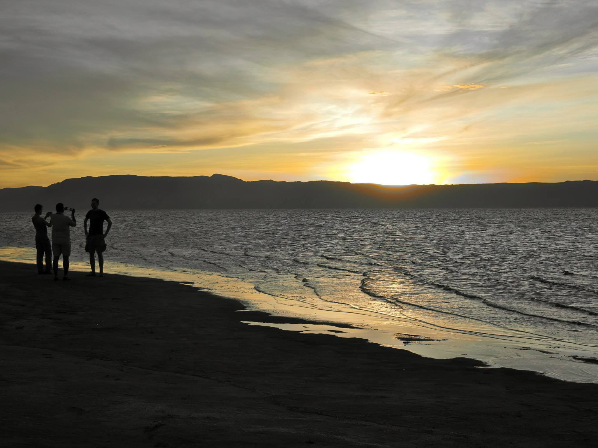
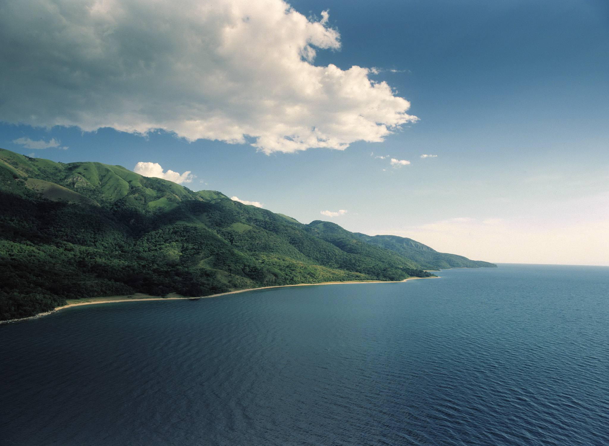
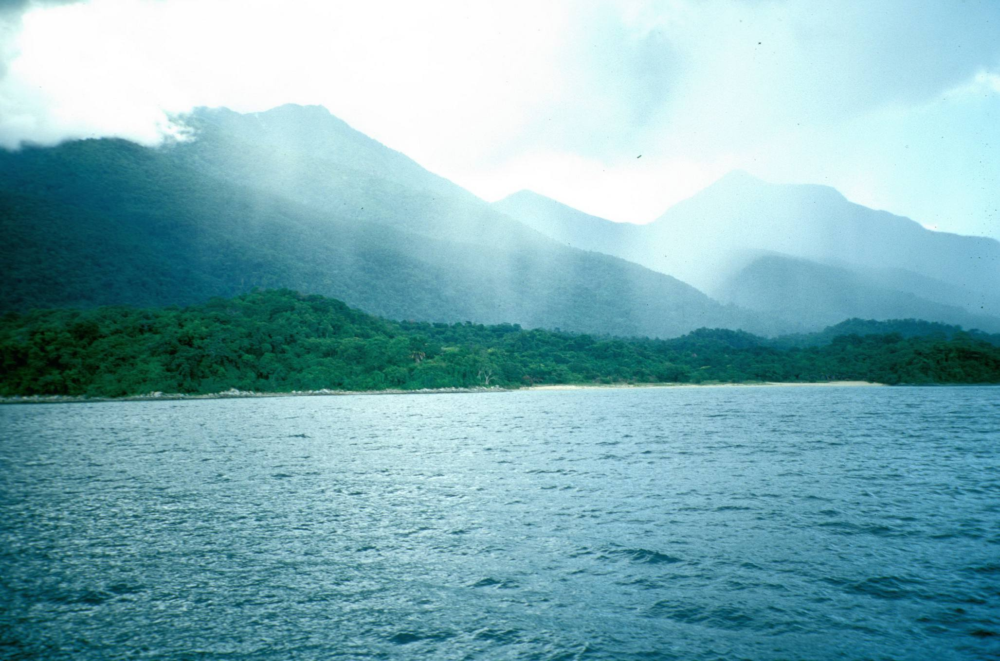

Lake Tanganyika is the world’s longest (660km), deepest in Africa and second-deepest in the world (more than 1436m) and second-largest (by volume) freshwater lake. At somewhere between nine and 13 million years old, it’s also one of the oldest. Thanks to its age and ecological isolation it’s home to an exceptional number of endemic fish, including 98% of the 250-plus species of cichlids. Cichlids are popular aquarium fish due to their bright colours, and they make Tanganyika an outstanding snorkelling and diving destination.
Comparatively narrow, varying in width from 10 to 45 miles (16 to 72 km), it covers about 12,700 square miles (32,900 square km) and forms the boundary between Tanzania and Congo (Kinshasa). It occupies the southern end of the Western Rift Valley, and for most of its length the land rises steeply from its shores. Its waters tend to be brackish. Though fed by a number of rivers, the lake is not the centre of an extensive drainage area. The largest rivers discharging into the lake are the Malagarasi, the Ruzizi, and the Kalambo, which has one of the highest waterfalls in the world (704 feet [215 metres]). Its outlet is the Lukuga River, which flows into the Lualaba River.
Lake Tanganyika is situated on the line dividing the floral regions of eastern and western Africa, and oil palms, which are characteristic of the flora of western Africa, grow along the lake’s shores. Rice and subsistence crops are grown along the shores, and fishing is of some significance. Hippopotamuses and crocodiles abound, and the bird life is varied.
Best time to visit: Year-round - enquire for seasonal highlights
Recommended duration: 1 - 3 days recommended
Entry cost: Park fees vary - contact us for current rates


Ready to explore Lake Tanganyika?
Request a Quote